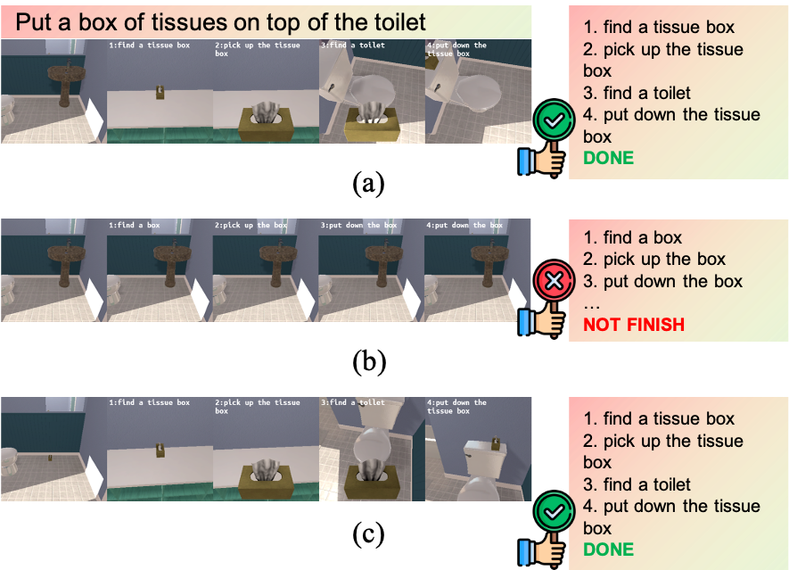

üé® Approach
üìñ System Overview
We introduce the 3DS-Plan framework, a novel open-vocabulary 3D scene perception and generation model designed to enhance robotic task planning. This framework integrates pre-trained visual language models, enabling robust and versatile scene understanding in a zero-shot learning setup. In addition, the generated representation of the 3D scene can further provide spatial and environmental details that help in task execution.

üìñ Contribution
üí´ We introduce 3DS-Plan, a system that enables task planning and execution based on the perceived environment, without relying on ground truth or predefined maps.
üí´ Our system integrates LLM-driven reasoning and common-sense knowledge to generate logical inferences and formulate task plans with actionable steps for execution, which can perform long action sequence tasks.
üí´ We demonstrate the effectiveness of our approach through extensive experiments. Our results show improvements in 3D scene generation and success rates for various task types, which validate its applicability in task execution scenarios.
üìñ Scene Generation for Utilization
3D scene processing and utilization for instance generation and task planning. From capturing input images to integrating instance information for practical task planning, it illustrates a workflow to interpret and respond to scene interaction.
üîç Experiment
üìñ 3DS-Plan for Task Planning
We conducted our experiments with the AI2-THOR environment and the GPT-3.5 model. A variety of rooms, including kitchens, living rooms, and bedrooms, were selected. We also analyzed the success rates for different task types.
In addition, the result also indicates that as the stride increases (thereby reducing environmental data density), the constructed scene becomes less complete, which negatively impacts the success rates across different tasks (complex tasks such as "clean_cool" and "heat_cold" show a significant drop in performance with larger strides). It suggests that denser scene construction is critical for tasks requiring higher action complexity.
üìñ Demonstration of the Framework for Task Planning
We also generate the corresponding scene instance with 3DS-Plan for the agent, and therefore constitute the environmental foundation for further task planning.
üè∑Ô∏è Task planning for "Pick up a bowl and turn a lamp on". It illustrates a simple pick-up task execution process, figure (a) shows a successful task case, as it can infer execution steps accordingly, while figure (b) depicts an attempt using the gpt-neo-1.3b model, which fails to complete the task.
üè∑Ô∏è Task planning for "Put a heated tomato in the fridge". It requires the agent to find a tomato, heat it in a microwave, and then place it into a specified object. The figure (a) illustrates a successful task planning case, while in figure (b) and figure (c), it doesn't plan out the correct steps due to weaker model. It also shows that our 3DS-Plan can provide an environmental foundation for task planning.
➡️ More examples can be found as follows
üè∑Ô∏è Task planning for "Place a vase on a coffee table". The figure (a) illustrates a successful task planning case, while figure (b) depicts an attempt using the gpt-neo-1.3b model, which fails to complete the task. figure (c) also shows a successful case with a smaller detection model.

üè∑Ô∏è Task planning for "Place a rinsed plated in the fridge". The figure (a) illustrates a successful task planning case, while in figure (b) and figure (c), it doesn't plan out the correct steps due to weaker model.
üè∑Ô∏è Task planning for "Pick up a laptop and turn on a lamp". The figure (a) illustrates a successful task planning case, while figure (b) depicts an attempt using the gpt-neo-1.3b model, which fails to complete the task. figure (c) also shows a successful case with a smaller detection model.
üè∑Ô∏è Task planning for "Put a box of tissues on top of the toilet". The figure (a) illustrates a successful task planning case, while figure (b) depicts an attempt using the gpt-neo-1.3b model, which fails to complete the task. figure (c) also shows a successful case with a smaller detection model.
